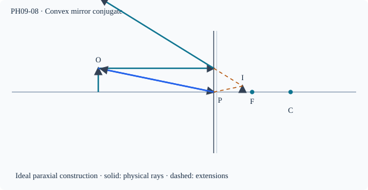

Prerequisite bridge
PH09-06
Before starting, identify the reference frame, directed rays, units and applicable geometric assumptions. Unbound prerequisites remain provisional.
Connected textbook foundation (preserved from PR #5)
9. Convex mirrors and the field of view
A convex spherical mirror reflects rays outward. For a real object at distance magnitude x>0, under the standard Cartesian convention with incident light from the left, take u=-x and a convex mirror focal length f>0. Using 1/f=1/v+1/u, the image position is v=fx/(f+x)>0, behind the mirror.
The magnification is m=-v/u=f/(f+x). Because 0<m<1, the virtual image is erect and reduced for any finite real object within this model. A wider angular field of view is useful in rear-view mirrors; it does not mean that the mirror shows objects at their true angular sizes.
Worked anchor: A convex mirror has f=12 cm and an object at x=24 cm. Then v=8 cm and m=1/3. Both must agree with the backward-extended ray diagram. A negative v here would contradict the chosen sign convention.
Build and check the model
For a convex mirror with f=+F and u=−d, v=Fd/(F+d)>0 and m=F/(F+d). Thus 0<v<F and 0<m<1 for a finite real object. As d decreases, v decreases but m increases; image location and size changes are not contradictory. Field of view depends on aperture and observer geometry, not a universal ratio of curvature alone.
Worked anchor
F=18 cm, d=54 gives v=13.5 cm, m=0.25; d=18 gives v=9 cm, m=0.5.
Condition and limiting check
Real object assumption matters: a converging incident beam (virtual object) can violate the familiar real-object image rule.
Misconception repair
The image is behind the mirror as a geometric extension, not a luminous object there.
Reasoning diagram

Self-check before transfer
For F=12 cm and a real object d=36 cm in front of a convex mirror, determine v and m.
Check the reasoning
v=12×36/(12+36)=9 cm; m=9/36=+0.25. Behind mirror, virtual upright.
The next page contains fresh authored transfer, not an examination reproduction.
Source and figure status
Curriculum pointer CBSE10; candidate scope only. Preserved chapter manuscript. An original subtopic-specific SVG is attached above. Scientific figure and teaching-sufficiency reviews remain HOLD.